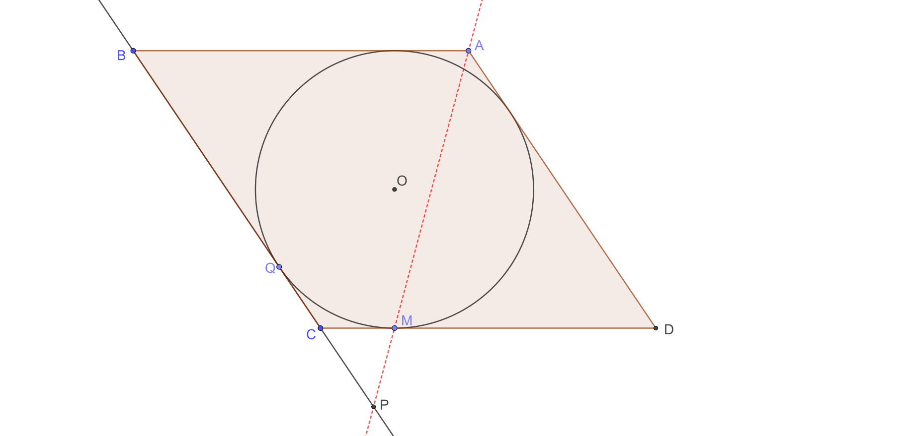
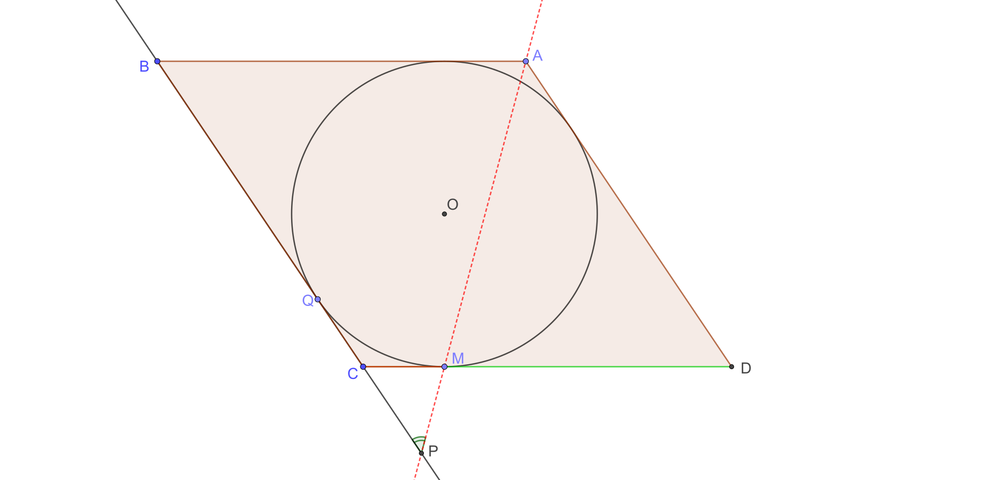

Условие задачи:
Окружность, вписанная в ромб \( ABCD \), касается сторон \( CD \) и \( BC \) в точках \( M \) и \( Q \) соответственно. Прямые \( AM \) и \( BC \) пересекаются в точке \( P \).
a) Докажите, что \( BP \cdot BQ = BC^2 \).
b) Найдите угол \( \angle APC \), если известно, что \( DM = 4 \) и \( MC = 9 \).
Чертеж к пункту а:

Решение пункта а:
Введём следующие обозначения: пусть \( DM = BQ = x \), а \( CM = y \). Рассмотрим треугольники \( CMP \) и \( DMA \). Они являются подобными, коэффициент подобия равен \( \frac{CM}{MD} = \frac{y}{x} \).
Исходя из этого, выразим длину отрезка \( CP \):
\[ CP = \frac{y}{x} \cdot AD = \frac{y(x+y)}{x} \]
Теперь выразим \( BP \):
\[ BP = BC + CP = x + y + \frac{y(x+y)}{x} = (x+y)\left(1 + \frac{y}{x}\right) = \frac{(x+y)^2}{x} = \frac{BC^2}{BQ} \]
Из данных равенств напрямую следует, что \( BP \cdot BQ = BC^2 \). Что и требовалось доказать.
Чертеж к пункту б:

Решение пункта б:
Пусть точка \( O \) — центр вписанной в ромб окружности, а \( r \) — её радиус. Отрезок \( OM \) является высотой в прямоугольном треугольнике \( COD \), проведённый к гипотенузе. Следовательно:
\[ r = OM = \sqrt{DM \cdot MC} = \sqrt{4 \cdot 9} = 6 \]
Из этого делаем вывод, что высота ромба составляет \( 2r = 12 \).
Опустим перпендикуляр из вершины \( A \) на прямую \( BC \) и обозначим его основание буквой \( H \). Очевидно, что \( AH \) является высотой ромба, поэтому \( AH = 2r = 12 \). Сторона ромба равна \( 4 + 9 = 13 \). По теореме Пифагора найдём отрезок \( BH \):
\[ BH = \sqrt{AB^2 - AH^2} = \sqrt{13^2 - 12^2} = 5 \]
Из подобия подобие треугольников \( CMP \) и \( DMA \), вычислим длину \( CP \):
\[ CP = \frac{CM}{MD} \cdot AD = \frac{9}{4} \cdot 13 = \frac{117}{4} \]
Найдем длину отрезка \( PH \):
\[ PH = CP + BC + BH = \frac{117}{4} + 13 + 5 = \frac{189}{4} \]
Рассмотрим прямоугольный треугольник \( AHP \). Тангенс угла можно вычислить так:
\[ \operatorname{tg} \angle APH = \frac{AH}{PH} = \frac{12 \cdot 4}{189} = \frac{16}{63} \]
Поскольку углы \( \angle APC \) и \( \angle APH \) совпадают, получаем:
\[ \angle APC = \operatorname{arctg} \frac{16}{63} \]
Ответ: б) \( \operatorname{arctg} \frac{16}{63} \)